Examples of Archiving Concepts
Before configuring the History Database you need to create an archiving concept in accordance with the customer’s requirements. As part of this process, you need to define the archiving concept, the number of storages and the time slicing intervals.
There are activities related to events. If events are archived, the activities should also be archived for consistency.
The History Database allows for the creation of a maximum of 64 custom archive groups and 32 Long-Term Storage repositories.
All archiving varieties can also be modified at a later point in time. Data must be archived in the correct storage from the beginning, because information that has been archived to one storage up to this point in time cannot be moved to another storage.
You can reduce data content for individual archive groups.
Symbol | Legend of Symbols |
Data Point | |
Activity Log Information | |
Alarm Log Information | |
Incident Log Information | |
Value Log (Online or Offline) Information |
Default: Deletion After Maximum Retention Period
In the default archiving concept, log values are grouped by data type and archived in the Short Term Storage where they are kept for a minimum retention period and deleted after a maximum retention period. Both of these parameters need to be set for any archive group. No data are archived in the Long Term Storage.
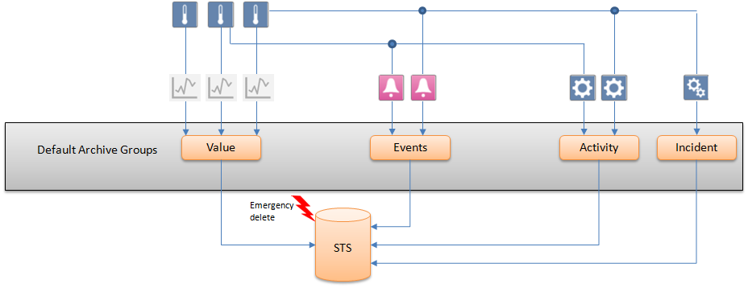
By enabling the Delete Log Entries function, old historical information can be automatically deleted from the Short Term Storage. Short Term Storage deletion can be specified for each individual default archive group or custom archive group.

NOTE:
All settings for automatic deletion become obsolete if an archive group is assigned to Long Term Storage. In this case, the properties are grayed out.
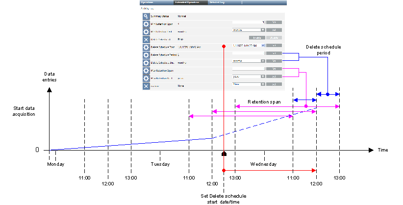
NOTICE

Deleting
Historical data is deleted permanently and cannot be restored.
Define automatic data backup (see Automate Data Backup) or set up archiving to be carried out prior to deletion.
Example Settings for Storage by Days | |||
Max Retention Time of Data in the STS | Min Retention Span | Max Rentention Span | Delete Period |
30 days | 10 days | 30 days | 1 day |
90 days | 30 days | 90 days | 1 day |
180 days | 90 days | 180 days | 1 week |
For more information on calculating the database size and time span, see Values and Data Capacity Settings.
NOTE 1:
No additional historical data is deleted if deletion is disabled.
NOTE 2:
The start date is in the past: When re-enabled, the historical data outside the defined time period is immediately deleted.
NOTE 3:
The start date is once again set to the future: When re-enabled, deletion starts as per the defined data and time setting.
Values and Data Capacity Settings
The following tables provide general guidelines for the various data volumes that are possible in a short term storage while operating prior to executing an emergency delete. An average value of 0.4 KB per data entry is assumed to calculate the database storage used. The effective number of saved data entries may be higher than indicated in the tables.
The applied settings depend strongly on the maximum entries per day, data group, legal regulations, and SQL Server used (maximum of 10 GB for SQL Server Express or 250 GB for SQL Server).
NOTE:
SQL Server Express is not suitable if you use Minimal retention span and anticipate a large amount of data.
Settings with Maximum Timeframe Only
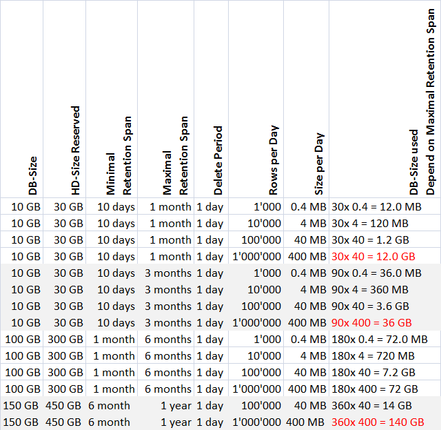
NOTE:
When applying settings, remember that an emergency delete occurs at 90% of database capacity.
Use the following table if the data volumes must be more precisely calculated.
User Storage per Data Group and Lines Rows | |
Data group | KB per data entry |
Time Series | 0.057 |
Activity log | 0.37 |
Alarm Log | 0.38 |
Incidents | 0.21 |
Concept 1: Simple Archiving with Single Storage
This archiving variant requires the least engineering. All logged data is archived in a single storage . A new Long Term Storage is created after the end of the set time slice interval (here: one year) or when the previous storage is full.
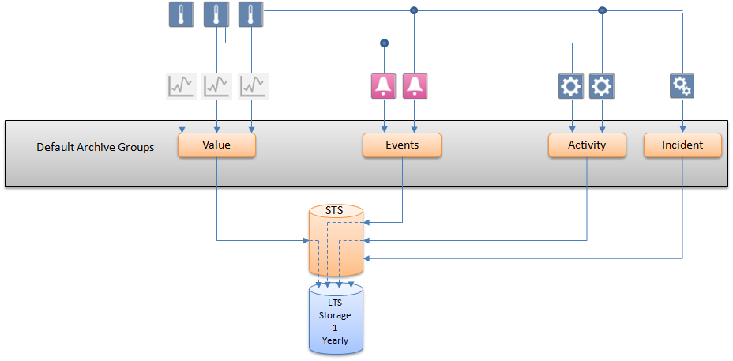
Concept 2: Simple Archiving with Double Storage
A separate Long Term Storage can be created for a particular data type (here: Value Log data), when a large number of data of this type is expected. In this case, it is recommended to set the time slice interval to one month. (See Simple Archive with Two Storages)
All Activity Log, Alarm Log and Incident Log data are archived in a single storage.
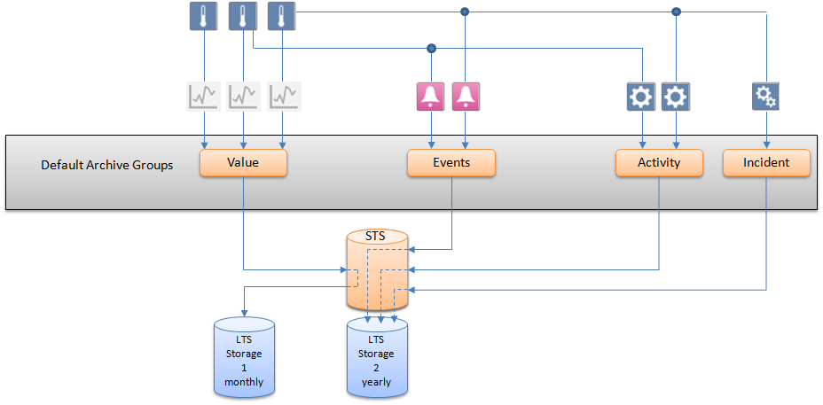
Concept 3: Archiving with Custom Storage Periods
The Archiving with Custom Storage Periods concept is recommended when a project requires several custom groups of data points whose logged data cannot be saved to the same Long Term Storage but needs to be distributed among several. In the example below, there are three custom archive groups that store different combinations of data types in three Long Term Storage units with custom time slice intervals. The data of all data points that have not been assigned to a custom archive group are saved according to the default archive concept, that is, in the default Short Term Storage and are deleted after the maximum retention period set for the default archive groups.
Some of the logged data need to be archived in a storage on a monthly or yearly basis. All other data do not need to be archived.
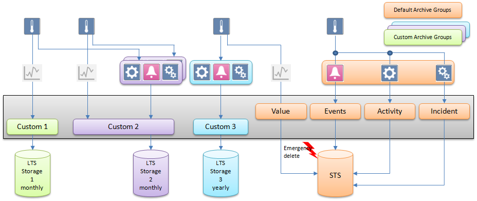
Concept 4: Retaining Values from Individual Data Points
For legal reasons, certain types of sensitive data can only be saved for limited periods of time. The example below requires three custom archive groups. Two archive groups are created, one with a retention period of seven days and one with a retention period of three months. The age of the data is checked daily. By setting a maximum retention period, for example, seven days, the oldest data is deleted automatically without being archived. All data points that have not been assigned to a custom archive group are saved in the Long Term Storage. (See Retain Values from Individual Data Points)
Some of the logged data need to be archived on a monthly or yearly basis. All other logged data is archived in a separate storage.
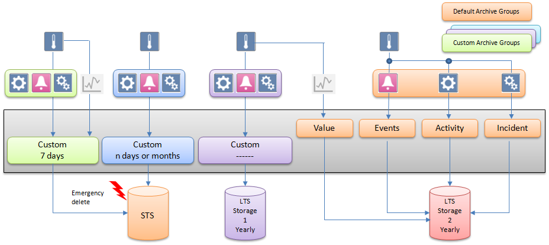
Concept 5: Retaining Values from Individual Data Points and Default Archive Groups
It is possible to assign custom as well as default archive groups to Short Term Storage. For each archive group, an individual retention period can be set. In the example below, three archive groups, two custom and one default, have their data archived in Short Term Storage with varying retention periods. (See Retain Values from Individual Data Points and Default Archive Groups)
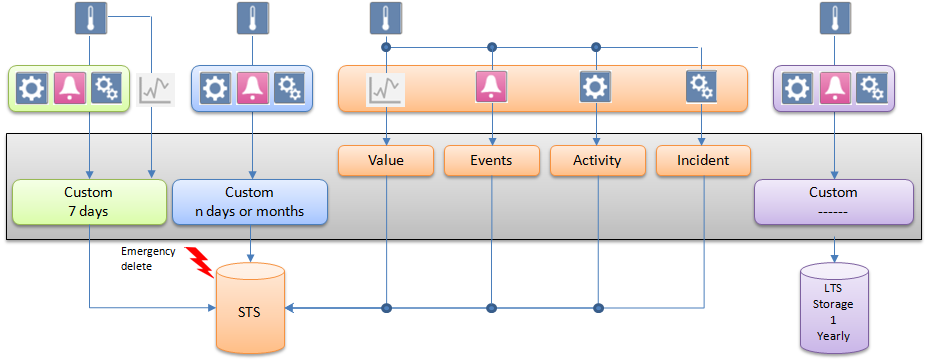
Concept 6: Filtering with Filter Groups
Some of the logged data needs to be filtered. Filtering is used to reduce the amount of communication and volume of data logged in HDB.
This filtering concept is recommended when a project requires groups of data points whose COV data needs to be filtered either based on value or time. In the filtering, values are logged only when they pass the filtering criteria. To find out whether any value was filtered in the past the Filtered column in HDB_DpIdsTs table in HDB or in finalized archived databases (LTS) can be referred..
The following filter groups can be assigned to a data point:
- Unassigned: The data of all data points that have not been assigned to a filter group are logged based on value comparison filter. That is the system compares a new system value and quality with the last logged value and quality and if there is any change the value gets logged or else the value gets filtered.
- Unfiltered: When data points are assigned to the Unfiltered filter group, data is logged without any value and quality comparison. Such data is required when same value needs to be logged for aggregation purposes.
- Filtered: When data points are assigned to value based filtering type filter group, data is logged based on Percentage and Absolute deadband values and if assigned to time interval logging type filter group, data is logged based on the interval defined. See Filter Groups Workspace.
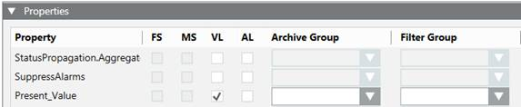
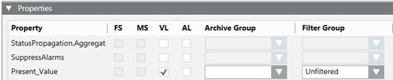
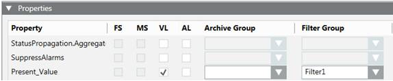
In the example below, there is a filter group that filter values based on value filtering.
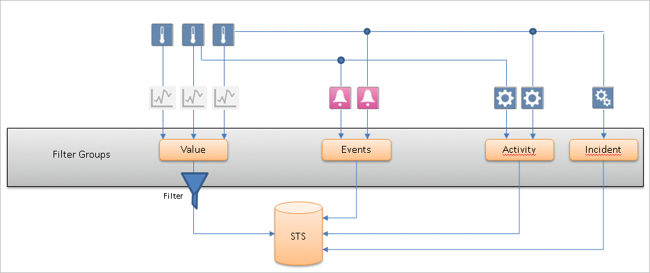
Use Cases for Time Interval Logging Filter Group
Use case 1:
For projects which integrate various subsystems with fast changing values (for example, changing per seconds), the amount of COV Online Trends generated is huge, and affects significantly the HDB size.
Example: We have a fast changing object in time that generates the following values. For this example, a filter group can be defined with a time window of 1 minute. This ensure that no more than one HDB record is generated in 1 minute.
The result is the following:
Time (H/M/S) | COV - input from field sensor | Current HDB log | New HDB log |
12:00:00 | 10 | 10 | 10 |
12:00:10 | 11 | 11 |
|
12:00:20 | 12 | 12 |
|
12:00:30 | 13 | 13 |
|
12:01:00 |
|
| 13 |
12:01:30 | 14 | 14 |
|
12:01:40 | 15 | 15 |
|
12:02:00 |
|
| 15 |
12:02:15 | 16 | 16 |
|
Use case 2
For projects which integrate various subsystems with slow changing values (for example, changing per hours), it is not easy to query the HDB values per time for such an object.
Example: We have a slow changing object in time that generates the following values. For this example, a filter group can be defined with a time window of 1 minute, in which the last available value is still logged in the HDB every minute. This ensure that always one HDB record is generated in 1 minute.
The result is the following:
Time (H/M/S) | COV - input from field sensor | Current HDB log | New HDB log |
12:00:00 | 10 | 10 | 10 |
12:01:00 |
|
| 10 |
12:02:00 |
|
| 10 |
12:02:10 | 11 | 11 |
|
12:03:00 |
|
| 11 |
12:04:00 |
|
| 11 |
12:05:00 |
|
| 11 |
12:05:20 | 12 | 12 |
|
12:06:00 |
|
| 12 |